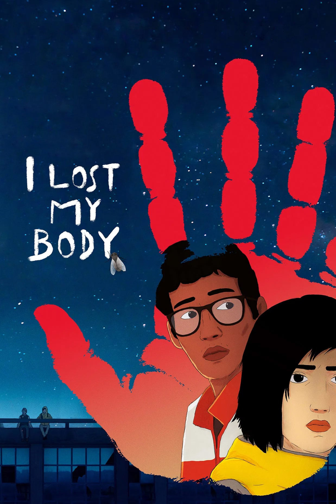

Dov'è il mio corpo?
Anno di uscita: 2019

Basato sul romanzo del 2006 di Guillaume Laurant Happy Hand. È stato presentato in anteprima nella sezione Settimana della critica del Festival di Cannes del 2019, dove ha vinto il Gran Premio Nespresso, diventando il primo film d'animazione a riuscirci nella storia della sezione.
Trama:
La storia di Naoufel, un giovane innamorato di Gabrielle. In un'altra zona della città, una mano mozzata fugge da un laboratorio di dissezione, decisa a ritrovare il proprio corpo.
Regia:
Jérémy Clapin
Studio di animazione:
Xilam Animation
Candidato all'Oscar nel
2020